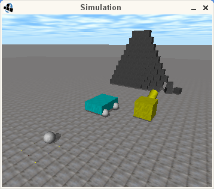
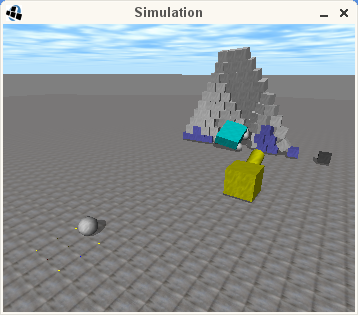
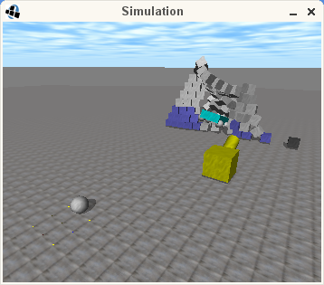
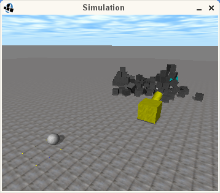

Features & Screenshots
- 100% pure Java port of the ODE / OpenDE physics
engine. Native libraries are only used for the OpenGL
rendering in the demos (thanks to lwjgl).
- Includes ports of GIMPACT
and libccd, not in their
latest version, but as they are included in ODE. For
GIMPACT that is pre-0.2, for libccd that is some
pre-1.3 version (as of ODE 0.13.1).
- Fast. It is in some cases even faster than the
original C/C++ ODE. Please note that only the physics
are fast. The graphical rendering in the demos is not
optimized and quite slow.
- Provides javadoc, ~30 demos, complete source code
and test harnesses (JUnit).
- Supports all geometries from ODE: box, convex,
capsule, cylinder, plane, ray, space, sphere,
heightfield (a kind of
trimesh) and trimesh (GIMPACT port, still beta state).
ode4j uses the libccd colliders. The old colliders can be
enabled through
OdeConfig.setLibCCDEndabled(false)
(before
calling anything else).
- Supports all joints from ODE: AMotor, Ball, DoubleBall
ContactJoint, FixedJoint, Hinge, DoubleHinge
Hinge2, LMotor, Piston, Plane2D,
PR, PU, Slider, Transmission and UniversalJoint.
- Supports all spaces from ODE: SimpleSpace,
HashSpace, QuadTreeSpace and SAPSpace.
- Java specific optimisations.
- A more object oriented implementation.
- Provides an alternative API which is a direct port
of the original C API. This simplifies understanding
the existing documentation & tutorials and helps
porting other ODE dependent code, but is not
recommended, because it is less object oriented.
For physics features, please refer to the ODE-Wiki
Some screen shots from the demo_crash
(one of many included demos):

Status
- Currently, the port has only been tested through the
available test harnesses and through running the
included demos. Functionality that is not used in
either may not be function correctly or may not be
available at all. Please point out these cases to me.
- ode4j uses 'double' precision. A single ('float')
precision version may improve performance by 10%-20%
(based on a singular test). Also, the code provides
some features that should allow a rather simple port.
But there are currently no plans for such a port.
- Trimesh / GIMPACT: Trimesh support contains no known
bugs except bugs that are also present in ODE for
C/C++. However, performance has still not been
optimized for Java.
- LIBCCD: A LIBCCD port is enclosed and can be enabled
through
OdeConfig.setLibCCDEndabled(true)
before doing anything else.
- Multi-threading: Since 0.13.0, ODE supports multi-threading.
Most of it has been ported to ode4j, but some parts are still missing. So
it is currently disabled.
Next Steps
- Complete support for multi-threading
- Look into optimizing OpenGL usage in demos. This
should also fix the GL related bugs.
- Port OPCODE library
- Improve javadoc (copy it from C++ API to object
oriented API
- Fix known bugs
- Improve webpage.
|